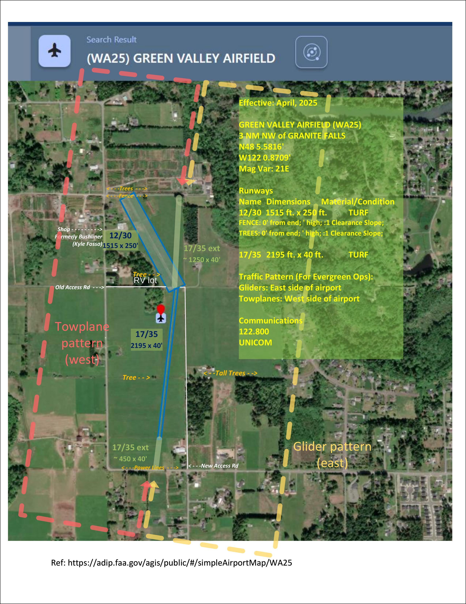

Green Valley Glider Operation
Date: April 12, 2025
Location: Green Valley Airfield-WA25
Address: 10901-10999 163rd Ave NE, Granite Falls, WA 98252
Parking will be at RV site off of 163rd Ave NE (mid-field access road). Additional parking available at Bushliner hanger to the north.
View & Print Liability Release Form (PDF)
Prior to Operation Day (Th/Fr)
- Gather ground equipment - Eric
- Grass Tie downs (just in case)
- Ratchet straps
- Radios, chargers
- Warning signs for road
- Flight log, Tow cards
- Park RV (with above equipment) - Matt, Eric
- Pickup cart trailer - Mark
Launch from AWO
- Approx. 9:00 am Arrive at AWO - All
- Safety briefing
- Sign/gather liability release waivers
- Prep/stage glider(s), towplane
- GV FM and ground crew heads to Green Valley - Zach, Jonathan, Doug
- Final check of runway, conditions
- Communicate wind/conditions back to AWO
- Monitor 122.8
- Monitor mid-field access road for traffic
- Launch ferry tow(s)
- Load golf cart on trailer and tow to GV - Mark, Matt
- Land and stage gliders
Saturday Operations
- Remaining Non-towing staff arrive
- Glider(s), tow plane land and stage
- 2nd Safety briefing
- Discuss conditions, determine launch and landing directions
- Rope breaks and other emergencies
- Ground ops, access road, etc.
- Rotate field checkout flights
- Wrap-up / debrief
- Put away gear in trailer
- Collect any garbage and stow in trailer
- Flight log, tow cards collected
Recovery to AWO
- Launch ferry tows back to AWO
- Tow golf cart, equipment back to AWO
- Flight log, tow cards collected
- Park golf cart trailer
- Remove travel trailer from GV
Notes
Assembly area / power / equipment / bathroom facilities: A Travel Trailer will be parked at the RV site adjacent to the mid-field access road (163rd Ave NE).
Ground crew: In addition to glider staging, one crew member will need to be stationed at the access road to address any vehicle traffic (local neighbors).
Glider staging: TBD Two main options have been proposed. Will be weather dependent and determined ultimately by CFIs on the field.
Towplane traffic / noise abatement: To avoid noise issues as much as possible, towplane traffic will generally favor the west side of the airport and tow gliders to the north along the river.
